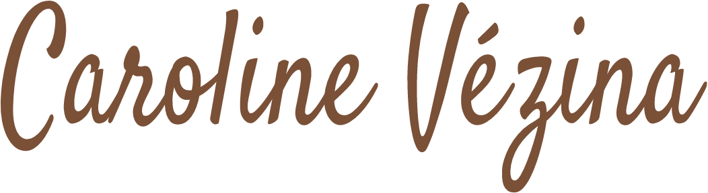

présentation
Après plus de neuf ans d'expérience en tant que dessinatrice en aménagement intérieur, mon parcours est passé par la planification de travaux ainsi que la gestion d'immeuble en copropriété pendant quatre années. Ces expériences mon permis de développer certaines aptitudes, notamment la créativité, l'esprit et le travail d'équipe, ainsi que le sens de l'organisation.
À la suite de mon déménagement en France, j'ai voulu faire un nouveau départ professionnel. Étant curieuse de nature, j'aime apprendre de nouvelle chose et je m'adapte facilement à un nouvel environnement. Ayant toujours eu un intérêt pour l'informatique et le design, j'ai donc choisi une reconversion en développement web, spécialisation Front-End.
Je suis à la recherche d'un stage pour cet été (entre juin et octobre). Puisque mes études sont toujours en cours, mes connaissances demeurent en apprentissage; je cherche donc à travailler pour une entreprise dynamique où je développerai mes compétences liées à ce métier avec le soutien de collègues expérimentés.
